Visual design first submission
For my 6 images I carried a theme throughout surrounding the film Don’t Worry Darling (2022). I tried to convey a retro 50’s style mixed with a modern almost futuristic style to fit those two themes of the movie.
Image 1
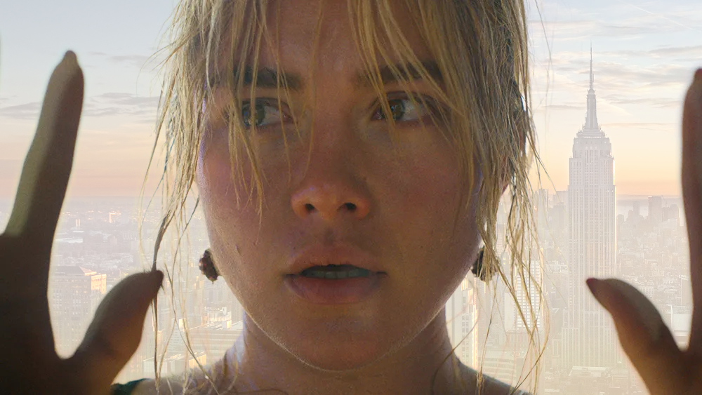
reference images


In image one Alice is escaping the simulated 50’s world and returning to the real world. To represent this return I decided to mask the background with an image of New York.
Image 2

reference images
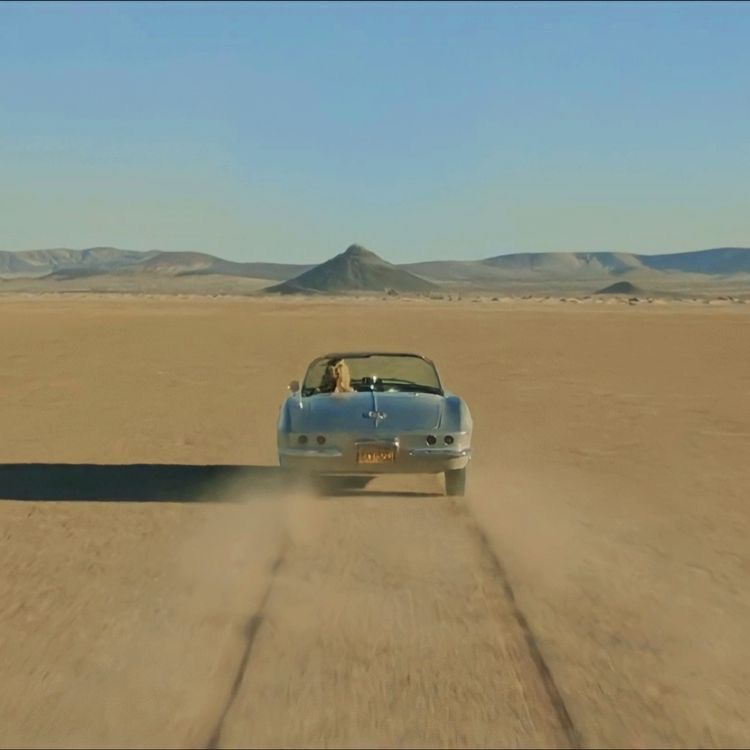
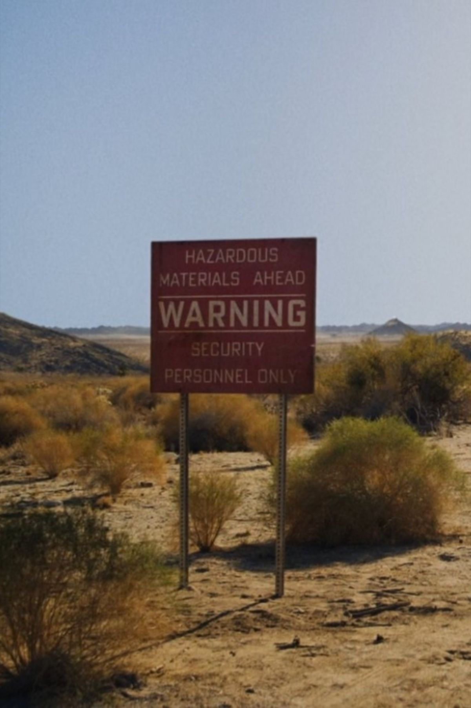
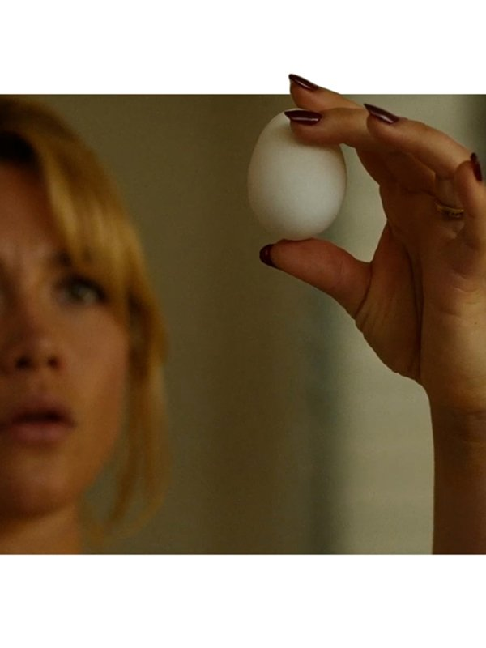
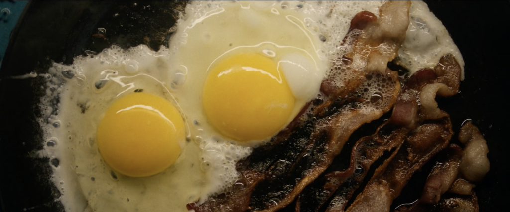
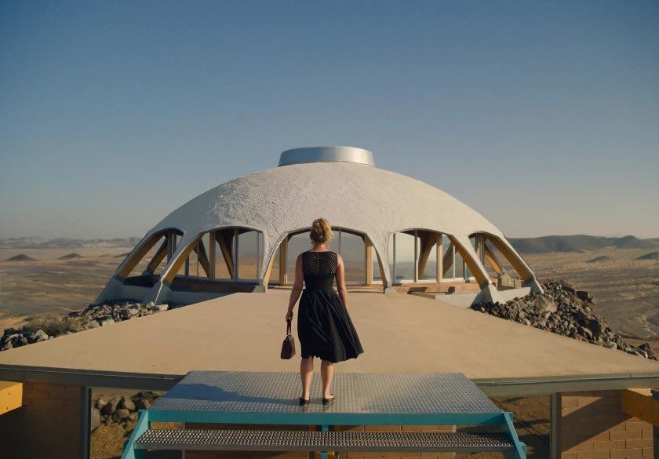
The second image is a postcard design I drew for Victory (the fictional town) in the style of a famous 50’s postcard artist Curt Teich (Peck-Davis, Lapis, 2018). I chose to draw memorable moments and iconography from the film in the lettering and after editing the colours and applied filters to make the image look withered as if it were an old postcard scanned onto a computer.
Image 3

reference images
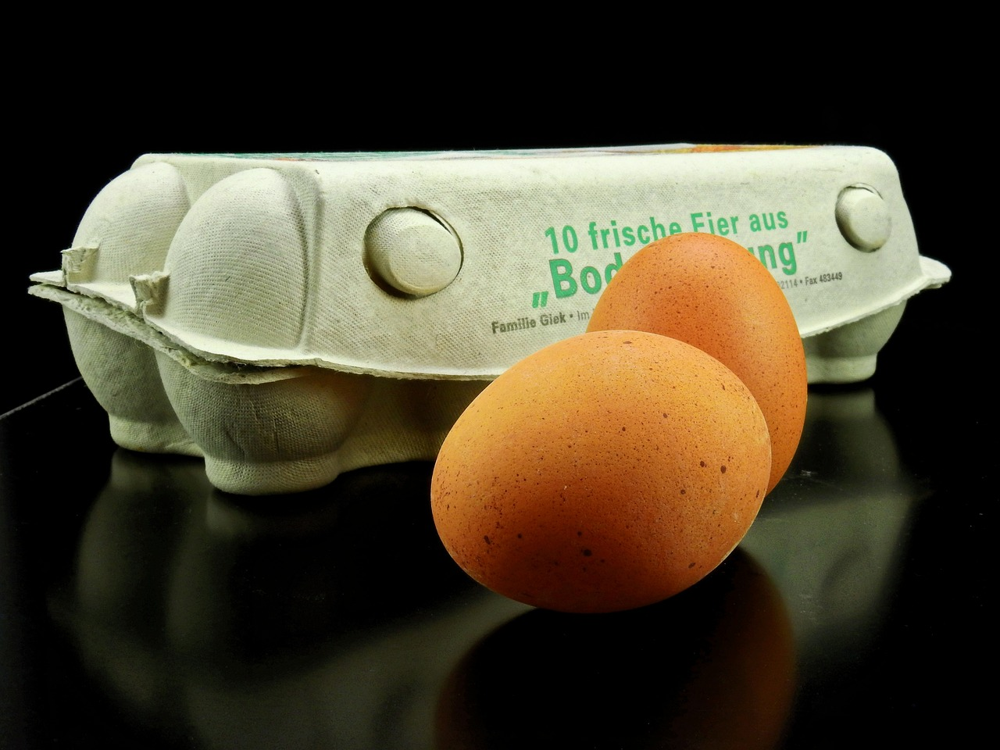
The third image is a photoshopped egg caron (Figure 3.1) to alter the brand to Victory Eggs and edited the colour of the carton to yellow to make it appear more luxurious like gold, also this colour shows the new world of Vicory as yellow is associated with renewal in Mexican cosmology (Yu, 2014).
Image 4
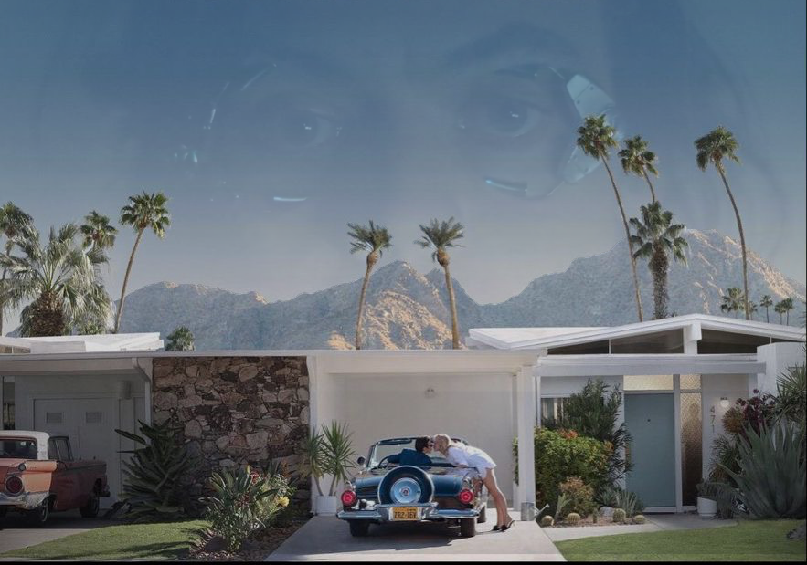
reference images
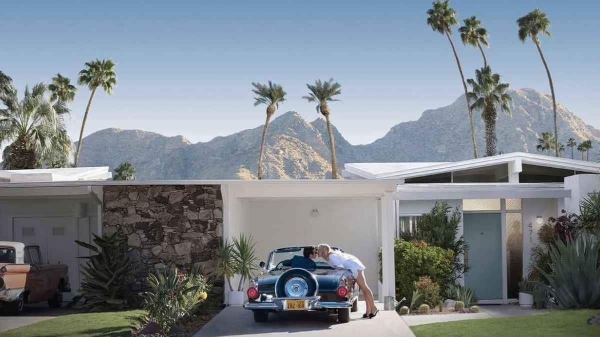
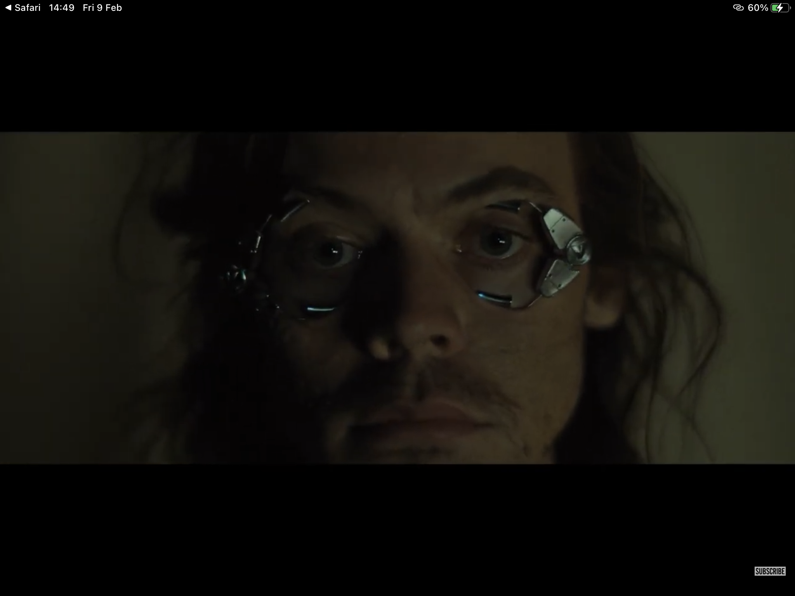
The fourth image is of Jack looking over his and Alice’s life in victory while in the simulation machine. I chose to really turn down the opacity on the image of Jack so it was quite faint. The faintness of the masked image of Jack creates an ominous feeling that is also conveyed throughout the movie.
Image 5

reference images
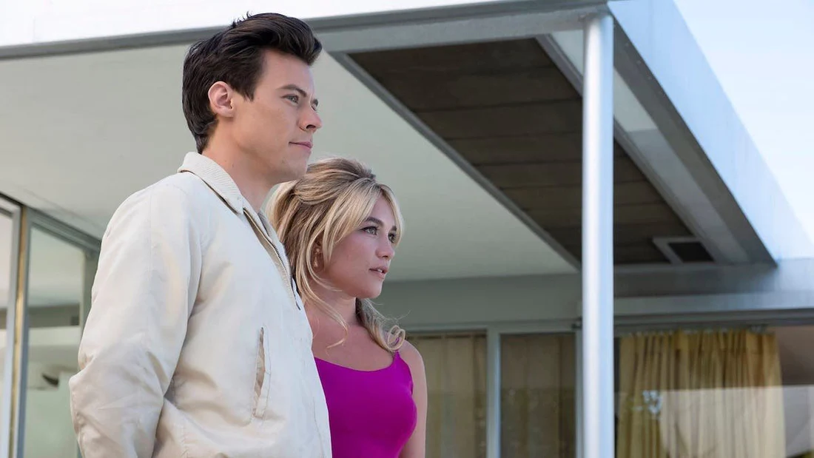
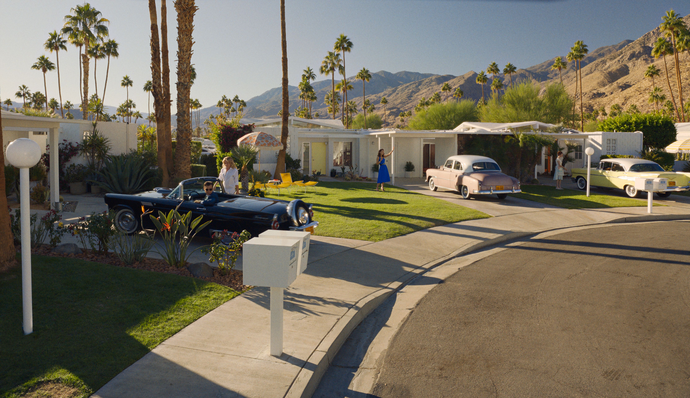
The fifth image is of a promotion poster for the Victory project. Combined with a few screenshots from the film alongside the logo and some text. I wanted to explore the idea of cognitive dissonance and use this to pressure the viewer into showing their love for their partner by joining the program (Lidwell, Holden, Butler, 2010). I again applied the same effects to this poster as I did to the postcard.
Image 6

Idea sketches
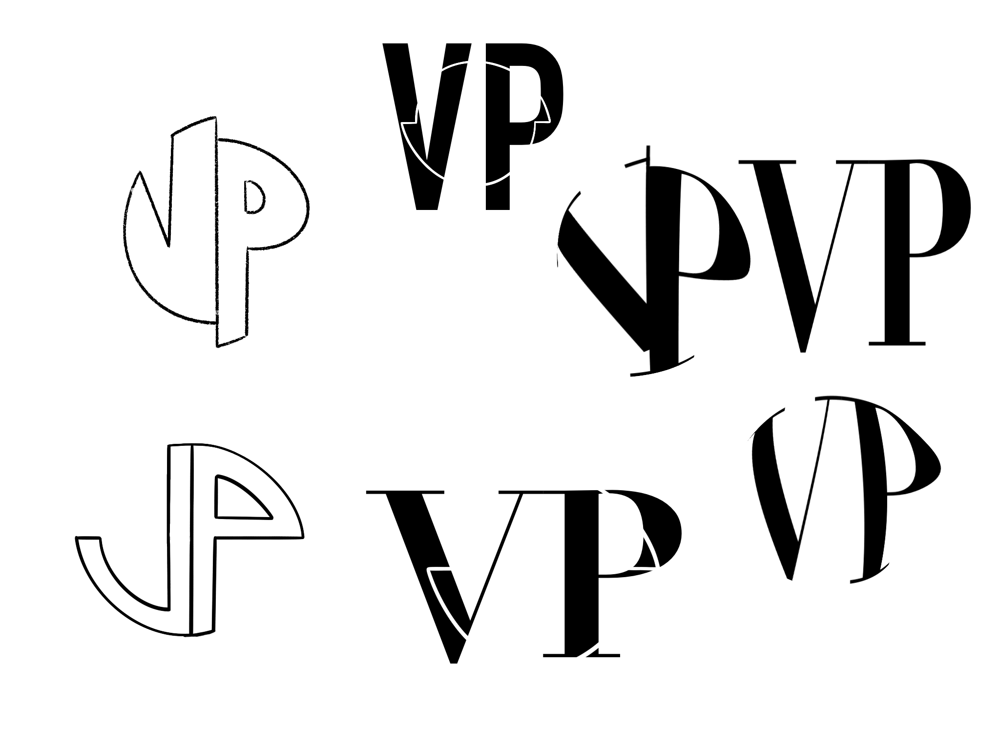
Version with green background

reference image
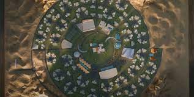
The final sixth image is the logo I designed for the victory project. I chose a font with a bold V so that it could align with the WWII v is for victory an image that would have been very familiar to 1950’s America where the simulation from the movie is set and stands for resilience that could align with the values of the victory project (Putnam, 2024). For an overlay over the V, I chose to include the spiral-like shape of the town of victory that leaves plenty of room for expansion.
Although in these images I experimented with some design theories like colour and cognitive dissonance I would like to utilise them further in my second submission working with them to a deeper level to give my images more meaning. I would also like to incorporate the concept of framing to manipulate the way information is shown within the images with positive framing highlighting the success of the victory project while ignoring or diluting its failures (Lidwell, Holden, Butler, 2010). Although I experimented briefly with typography in the poster, egg carton and postcard I want to explore this area more as Amar, Droulers, and Legohérel highlight legible typography can persuade customers to purchase over harder-to-read fonts (2017). In my submitted images I attempted to make the fonts more legible through a slight background glow on the font in the poster. However, I want to expand my knowledge on this subject, for example with the egg carton image. Another area I would like to focus on is immersion as the theme of these images are all from a film and films rely upon the suspension of reality from the real world to the reality of the film world. Lidwell, Holden, and Butler explain how engaging attention over time can create a sense of immersion through things like games and instructions (2010). I’m hoping in my second submission I can create something that uses game-like images of victory that draw people in creating a sense of immersion.
Bibliography
Amar, J., Droulers, O. and Legohérel, P., 2017. Typography in destination advertising: An exploratory study and research perspectives. Tourism Management, 63, pp.77-86.
Don’t Worry Darling (2022) Directed by O. Wilde [Film]. United States: Warner Bros. Pictures.
Lidwell, W., Holden, K. and Butler, J., 2010. Universal principles of design, revised and updated: 125 ways to enhance usability, influence perception, increase appeal, make better design decisions, and teach through design. Rockport Pub.
Peck-Davis , A. and Lapis, D. (2018) The immigrant story behind the classic ‘greetings from’ postcards, Smithsonian.com. Available at: https://www.smithsonianmag.com/travel/immigrant-story-behind-classic-greetings-from-postcards-180970894/ (Accessed: 25 February 2024).
Putnam, J. (2024) V for victory: A sign of resistance, The National WWII Museum | New Orleans. Available at: https://www.nationalww2museum.org/war/articles/v-victory-sign-resistance (Accessed: 25 February 2024).
Yu, H.C., 2014. A cross-cultural analysis of symbolic meanings of color. Chang Gung Journal of Humanities and Social Sciences, 7(1), pp.49-74.
Images
Figure 1 Klook (no date) Best things to do in New York 2022 | Attractions & Activities - ... Available at: https://www.klook.com/en-GB/city/93-new-york-things-to-do/ (Accessed: 25 February 2024).
Figure 2 Bru-nO (2016) Egg, Chicken, Hen image. Free for use., Pixabay. Available at: https://pixabay.com/illustrations/egg-chick-chicken-eggshell-1972923/ (Accessed: 25 February 2024).